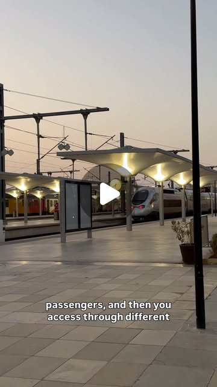

Instagram Reel

SHALL WE TAKE THE TRAIN? 🚆
video transcript (enriched by ClaudeClaw)
Summary
[CAPTION]
SHALL WE TAKE THE TRAIN. 🚆
As a travel planner I usually book private drivers or rental cars.
[CAPTION]
SHALL WE TAKE THE TRAIN? 🚆
As a travel planner I usually book private drivers or rental cars. But Morocco’s rail system keeps getting better, and on the Tangier - Marrakech route I now often suggest the train instead of a 580 km drive that eats 6 hours of your day.
550 MAD (around €50) in first class.
Here is exactly how it works, because this is where people get confused:
▪️ It is NOT one direct train.
However, you buy ONE connected ticket, Tangier to Marrakech. Always get first class. Can buy tickets online or at train station
HOW IT WORKS
🚄 Leg 1: AL BORAQ, Tanger Ville→ Casa Voyageurs - travel time 2.17 h
Africa’s high speed train. Wide seats, sockets, tray tables, a little onboard cafe for snacks. Very futuristic.
☕ In Tangier station first class passengers get their own waiting lounge with complimentary coffee and a separate exit straight to the platform.
⏱️ Connection in Casablanca: 27 minutes. Same station, no stress, you just walk across.
🚉 Leg 2: TL 116, Casa Voyageurs → Marrakech
Travel time - 3 hours
This one is the classic train, if you book first class means a closed compartment of 6 seats. slower, but comfortable enough and part of the experience.
🕓 Total:
5h38 door to door, and you arrive at Marrakech station
I have travellers with the budget for private transfers who still choose the train, purely for the experience.
I mix all kinds of logistics into my itineraries, and for travellers who want train rides I plan the route and buy the tickets. Everything at blondieinmorocco.com 🇲🇦
PS - there is also a NIGHT TRAIN between Marrakech and Tangier. You will not find it online. Tickets only at the station. My little secret, now yours. 🌙
[VIDEO]
Today I'm taking the fast speed train from Tangier to Marrakesh. I bought first class ticket for fifty euro, five hundred and fifty bura. So this is the train station in Tangier, and here you see the separate lounge for first class uh passengers, and then you access through different door to the train. And I really love the design and the the train has two floors, really comfortable seats, uh sockets, also internet if you wanna do some work. And the best part you can go to their cafeteria to buy some coffee, snacks. It looks so modern, a bit uh futuristic design. I really loved it. Then don't forget you have to change the train in Casablanca, it's not like a direct train. So Casablanca is not the fast-speed train, you see how it looks like it's a way different. So you have uh uh cabins of uh uh eight people in each cabin and this is it. I'm in Marrakesh, arrived safe and sound, really loved the experience. It was only s around six hours drive instead of uh taking the car for seven even eight hours sometimes. So I hope you enjoy my video and let's take a train.
View original on Instagram Reel →